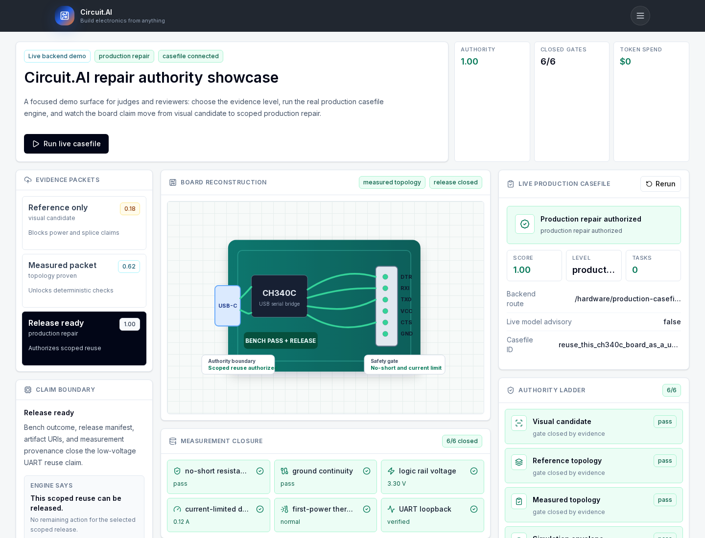
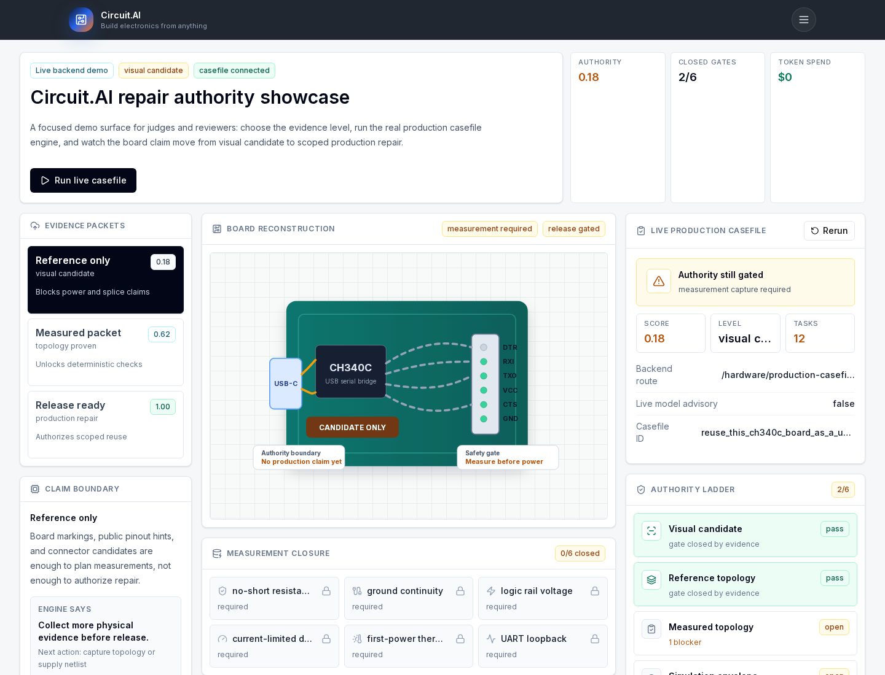
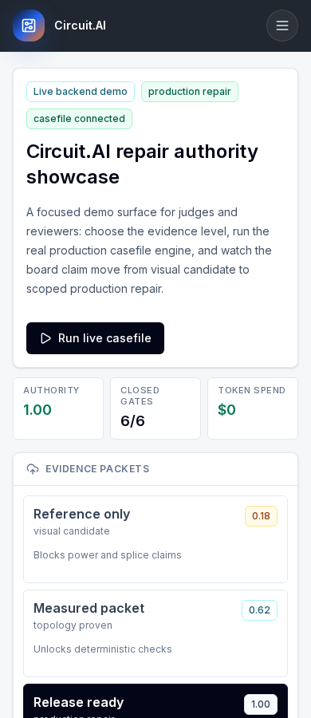

Proposal: Circuit.AI Hardware Splicer
Project Title
Circuit.AI Hardware Splicer: an evidence-gated AI agent for circuit board
understanding, repair, reuse, and safe hardware recomposition.
Applicant
- Applicant name:
<fill in> - School / department:
<fill in> - Student ID:
<fill in> - Email:
<fill in> - Team size: solo
Abstract
Circuit.AI Hardware Splicer is an AI-agent system that helps turn unknown or
partially documented circuit boards into repairable, reusable, and recomposable
engineering assets. Unlike a simple PCB image labeler, the system builds an
authority casefile from board photos, markings, public references, measured
pinouts, voltage/current/thermal evidence, and bench outcomes. The agent is
designed to refuse unsafe overclaims: visual evidence can plan measurements, but
only trusted physical evidence can authorize repair or reuse. During July-August
2026, the project will extend the current backend prototype into a competition
demo covering multi-photo board intake, Qwen/vision-assisted evidence extraction,
measurement closure, and a bilingual frontend showcase for semiconductor and
electronics repair workflows.
Problem
Electronics repair and reuse often fail because the useful circuit functions on
a board are hard to identify safely. A physical board may have undocumented
connectors, unknown voltage domains, missing schematics, damaged regions, or
incomplete labels. Existing visual AI tools can identify components, but they
often overstate confidence and do not know whether a board can be powered,
repaired, spliced, or reused.
For semiconductor and electronics education, this creates a practical gap:
students and makers can see parts on a board, but still need a disciplined path
from observation to electrical evidence, test planning, and safe functional
reuse.
Proposed Solution
Circuit.AI Hardware Splicer is an AI agent that converts messy board evidence
into a structured production authority casefile.
The agent separates three levels of truth:
- Candidate evidence: photos, markings, OCR, visual model output, public
datasheets, and reference pinouts.
- Measured evidence: continuity, resistance, voltage, current, thermal, and
connector pinout records with instrument and artifact provenance.
- Release evidence: terminal bench outcomes, first-power results, functional
proof, release manifest, scope statement, and audit artifacts.
This creates a safety-focused workflow:
board evidence -> topology hypothesis -> measurement plan -> measured topology
-> simulation/check envelope -> controlled bench -> scoped repair/reuse releaseThe current prototype already demonstrates this flow through a live backend
casefile endpoint and frontend showcase.
Current Prototype State
The current repository contains a working backend and frontend showcase.
Live showcase route:
/showcase?state=releaseBackend endpoint demonstrated:
POST /hardware/production-casefile/runVerified demo behavior:
- Reference-only packet:
- authority level:
visual_candidate - authority score:
0.18 - production authorization: false
- result: measurement capture required
- Release-ready packet:
- authority level:
production_repair - authority score:
1.00 - production authorization: true
- result: production repair authorized for the scoped low-voltage reuse claim
This is important because the system does not merely produce an answer. It
shows why a claim is blocked or authorized.
AI Agent Design
The agent is composed of deterministic and model-assisted layers.
1. Visual And Reference Intake
Inputs may include:
- multiple board photos
- connector closeups
- IC marking closeups
- public product pages or datasheets
- known pinout references
- optional Qwen vision model output
The output is candidate board_evidence.v1, not final truth.
2. Topology Hypothesis
The system fuses multiple observations into a candidate map:
- probable ICs
- connectors and headers
- likely rails
- candidate reusable functions
- no-cut or unsafe zones
- next photos or measurements needed
3. Measurement Authority
The agent creates a bench capture packet requiring:
- instrument identity
- calibration status
- operator and timestamp
- artifact URI
- resistance/no-short checks
- continuity checks
- voltage and current readings
- thermal observation
- functional bring-up proof
4. Production Casefile
The final casefile contains:
- current authority level
- authority score
- evidence gates
- open blockers
- release decision
- terminal outcome
- release manifest
- allowed and forbidden claims
5. LLM / Vision Model Role
Models are used to accelerate interpretation, not to replace evidence:
- Qwen VL or similar model: native multi-photo board evidence extraction.
- DeepSeek/Copilot-class models: structured reasoning over evidence packets.
- Deterministic verifier: blocks unsupported, unsafe, or overconfident claims.
This architecture is practical for semiconductor AI because it uses models where
they are useful but keeps electrical authority tied to measured evidence.
July-August Development Plan
If shortlisted, the token subsidy will be used to develop and evaluate:
- Multi-photo board intake and evidence fusion.
- Qwen-assisted visual extraction for connectors, IC markings, damage, and
candidate reusable functions.
- Real-board case corpus with at least 10 measured board sessions.
- Measurement workflow UI for continuity, voltage, current, thermal, and
functional proof.
- Bilingual English/Traditional Chinese demo mode.
- Final competition presentation with a live CH340C USB-serial reuse case.
Demonstration Scenario
The planned final demo will use a low-voltage USB serial board as the controlled
example.
- The agent receives visual/reference evidence only.
- It identifies the CH340C board and useful UART header candidate.
- It refuses production repair authority because there is no measured topology.
- The operator adds measured pinout, no-short, voltage, current, thermal, and
bench-loopback evidence.
- The agent promotes the case to production repair authority for a scoped
low-voltage reuse claim.
- The UI displays the casefile, authority ladder, board topology, measurement
closure, and release result.
Expected Deliverables
By the final presentation:
- live frontend demonstration
- backend casefile engine
- multi-photo intake example
- measured topology capture example
- authority ladder and safety gates
- bilingual UI layer
- short demo video
- technical architecture diagram
- evaluation report over real or curated board cases
Evaluation Metrics
The project will be evaluated by:
- whether the system refuses unsafe or unsupported claims
- whether visual evidence converts into useful measurement tasks
- whether measured evidence changes the authority state correctly
- whether the final release is scoped and auditable
- whether the frontend makes the workflow understandable to non-authors
- whether real-board examples improve from visual-only to measured-authority
states
Fit For The Competition
This project fits the semiconductor AI-agent theme because it applies AI agents
to a practical electronics and circuit-board workflow: understanding physical
hardware, extracting reusable circuit functions, planning measurements, and
supporting safe repair or reuse. It is not only a chatbot; it is an agentic
engineering workflow with evidence gates, structured artifacts, and verifiable
authority transitions.
The project is also suitable for the July-August development subsidy because
vision model tokens can directly improve board-photo interpretation and create
measurable progress toward a final demo.
Risks And Safety
The system is intentionally conservative:
- visual evidence cannot authorize power-up or splice
- high-voltage, battery, damaged, and unknown-power regions remain blocked
- production repair requires measured topology and bench outcome evidence
- model output is advisory until checked by deterministic gates
- the frontend displays claim boundaries and remaining blockers
This makes the project safer and more credible than an unrestricted AI repair
advisor.
Requested Support
The monthly token subsidy would be used for:
- Qwen/native vision experiments on board photos
- structured model reasoning over evidence packets
- real-board case evaluation
- bilingual demo refinement
- final presentation preparation
Summary
Circuit.AI Hardware Splicer aims to make unknown circuit boards legible,
measurable, reusable, and safer to work with. The current prototype already
shows the core authority transition. The competition period would be used to
turn this into a polished AI-agent demo for semiconductor/electronics repair,
reuse, and education.
Appendix: Current Live Showcase Screenshots


